Experiment Overview
🎯 Baseline
Original MuJoCo environment — no perturbations. This is the control condition showing the agent's learned behavior under training-matched dynamics.
🧊 Friction ×0.5
Ground friction halved — simulates icy or slippery surfaces. Tests robustness to contact dynamics changes.
🪐 Gravity ×2
Gravitational acceleration doubled — simulates a heavier planet. Tests robustness to fundamental physics changes.
📡 Noise σ=0.3
Gaussian noise (σ=0.3) added to observations — simulates sensor degradation. Tests robustness to observation corruption.
HalfCheetah
4 videosHalfCheetah — Baseline
Standard dynamics. Smooth forward locomotion gait.
HalfCheetah — Low Friction
Halved friction. Watch for sliding and gait instability.
HalfCheetah — Double Gravity
Doubled gravity. Agent struggles with heavier body dynamics.
HalfCheetah — Observation Noise
Noisy observations. Jittery actions from corrupted state estimates.
Hopper
4 videosHopper — Baseline
Standard dynamics. Stable hopping gait.
Hopper — Low Friction
Halved friction. Hopper may slip on landing.
Hopper — Double Gravity
Doubled gravity. Hopper can't achieve sufficient jump height.
Hopper — Observation Noise
Noisy observations. Balance disrupted by corrupted state.
Walker2d
4 videosWalker2d — Baseline
Standard dynamics. Bipedal walking gait.
Walker2d — Low Friction
Halved friction. Feet slide, balance compromised.
Walker2d — Double Gravity
Doubled gravity. Walker struggles to maintain upright posture.
Walker2d — Observation Noise
Noisy observations. Erratic movements from corrupted inputs.
Side-by-Side Comparison
Compare across environmentsSelect a shift type to compare how each environment responds to the same perturbation.
Result Plots
12 plotsTraining Curves
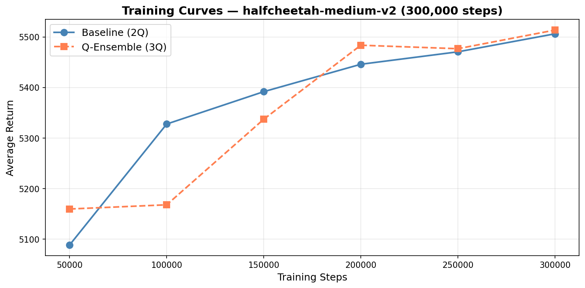
HalfCheetah — Training Curves
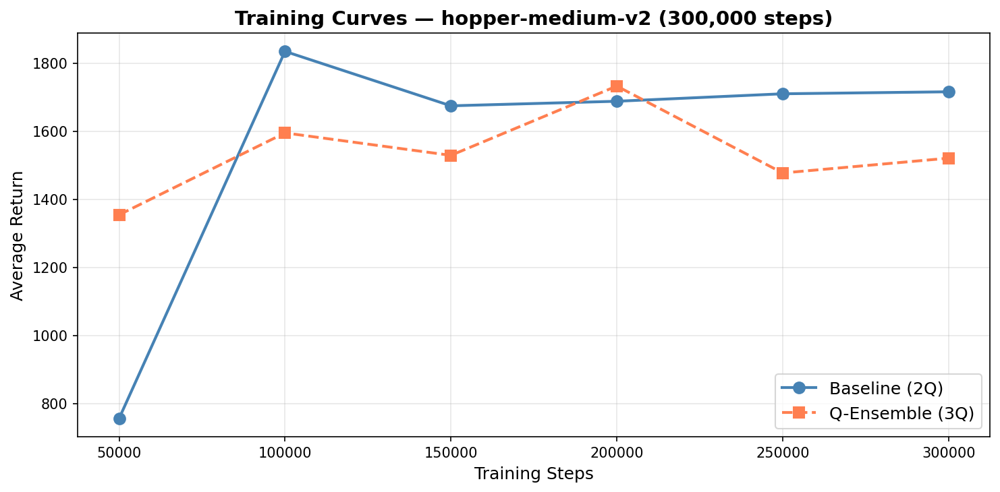
Hopper — Training Curves
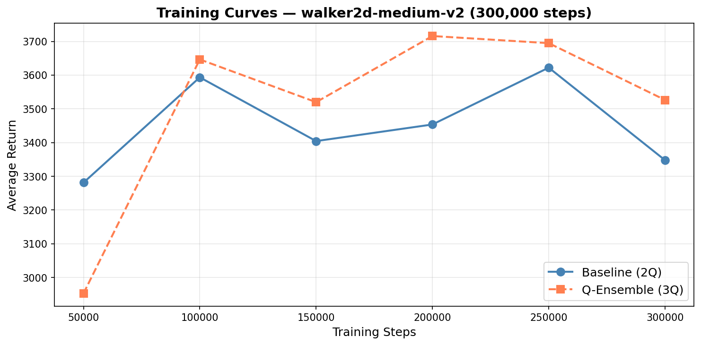
Walker2d — Training Curves
Degradation Curves
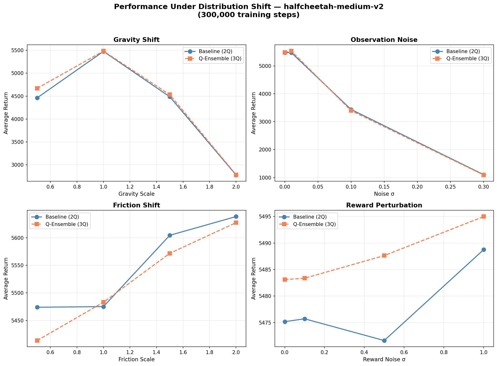
HalfCheetah — Degradation Under Shift
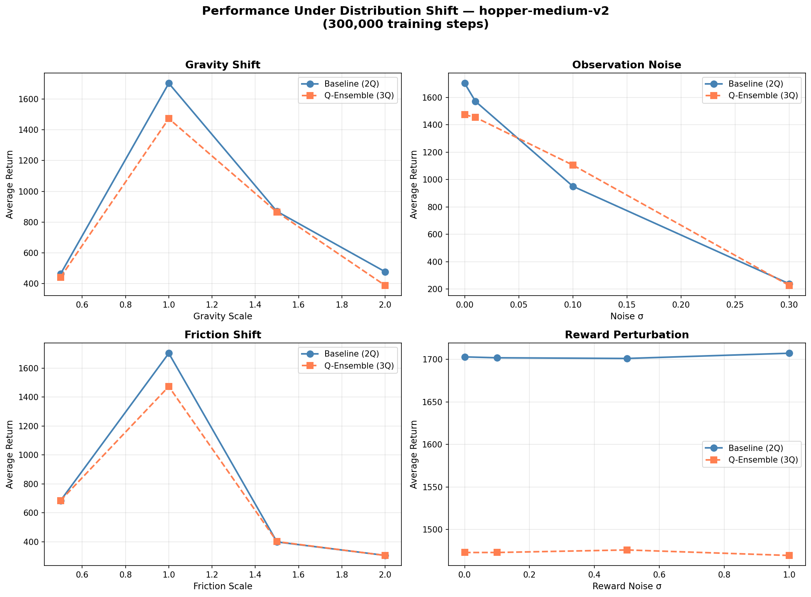
Hopper — Degradation Under Shift
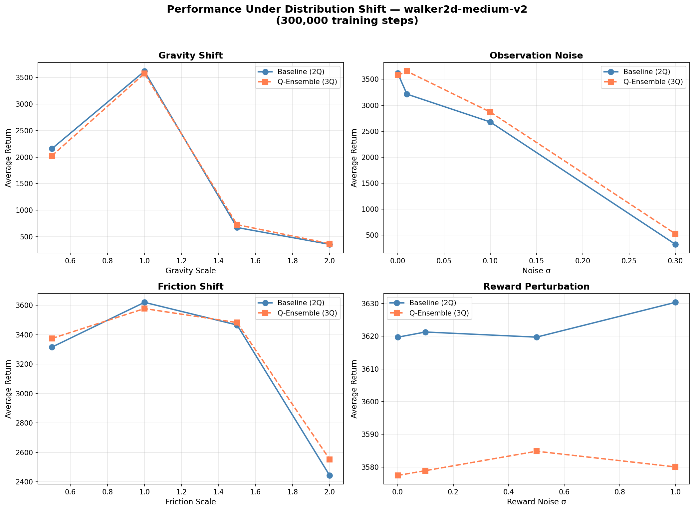
Walker2d — Degradation Under Shift
Robustness Drop (2Q vs 3Q)
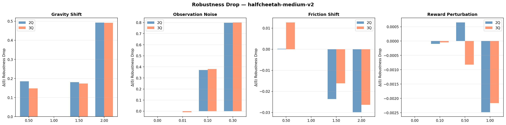
HalfCheetah — Robustness Drop Bars
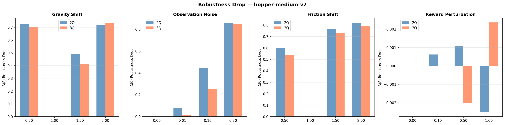
Hopper — Robustness Drop Bars
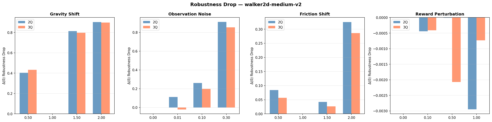
Walker2d — Robustness Drop Bars
Demo vs Production Comparison
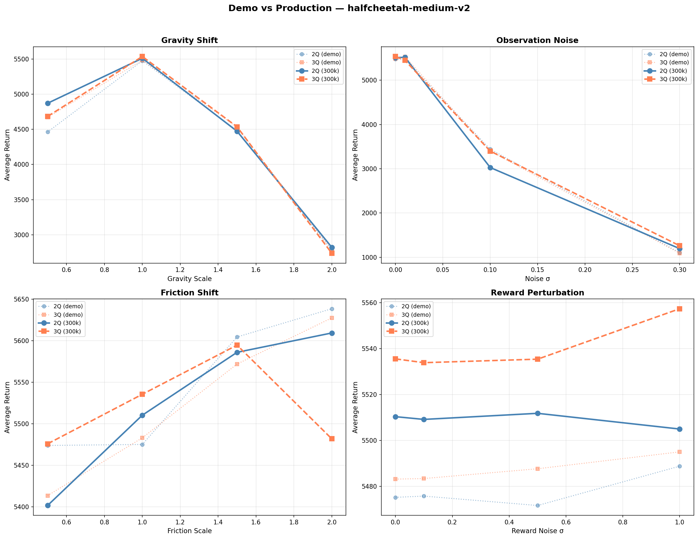
HalfCheetah — Demo vs Production
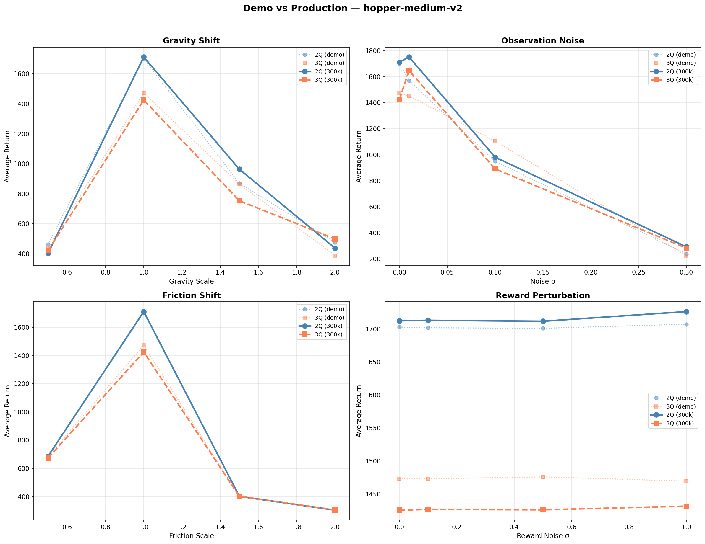
Hopper — Demo vs Production
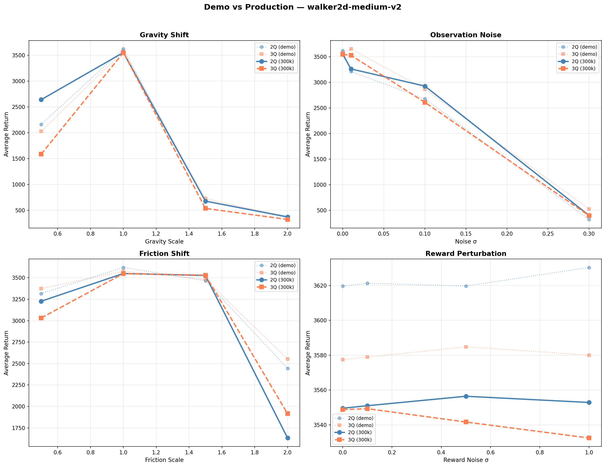
Walker2d — Demo vs Production
Key Findings
📉 Gravity is the Hardest Shift
Doubling gravity causes the largest performance drops across all environments. Hopper is especially vulnerable — it often falls immediately under 2× gravity.
🧊 Friction Shift is Environment-Dependent
HalfCheetah handles low friction relatively well due to its stable body plan. Hopper and Walker2d degrade more because balance depends on ground contact.
📡 Observation Noise Degrades Gracefully
σ=0.3 noise causes visible jitter but agents often maintain forward progress. The policy's implicit averaging over noisy inputs provides some natural robustness.
🔢 TripleCritic (3Q) Helps Under Shift
The 3Q variant shows smaller performance drops under distribution shift, especially for gravity and friction perturbations. The more conservative Q-estimates provide a safety margin.